论文精读2：Training-Free Layout Control with Cross-Attention Guidance
1 Abstract
最近基于扩散的生成器可以从文本提示生成高质量的图像。然而，他们经常忽略指定组合空间布局的文本指令。我们提出了一种实现鲁棒布局控制的简单方法，而不需要对图像生成器进行训练或微调。我们的技术操纵模型使用的交叉注意力层来连接文本和视觉信息，并在给定的期望方向上引导生成，例如用户指定的布局。
为了确定如何最好地指导注意力，我们研究了注意力图的作用，并探索两种替代策略：前向和后向指导。我们在三个基准上彻底评估了我们的方法，并对两种策略进行了比较分析，证明了后向引导与前向引导以及先前的工作相比的优越性。我们通过将布局引导扩展到编辑真实图像布局和上下文等应用程序来进一步演示布局引导的通用性。
2 Introduction
生成 AI 是过去几年出现的最具创新性的技术之一。在计算机视觉中，新的文本到图像生成方法，如DALL-E[37]、Imagen[43]和Stable Diffusion[39]，已经证明机器能够生成足够高质量的图像，用于许多应用，提高专业艺术家和非专业人士的生产力。
然而，尽管取得了这一成功，但图像生成的许多实际应用，特别是在专业环境中，都需要这种方法所缺乏的高水平控制。基于语言的图像生成器中的规范是文本的；虽然文本可以利用庞大的高级概念库，但它不是表达图像中细粒度视觉细微差别的好工具。具体来说，文本往往不足以描述作文的确切布局。
事实上，如之前的工作[16]所示，最先进的图像生成器很难正确解释通过文本指定的简单布局指令。例如，当用“猫左边的狗”这样的短语提示此类模型时，“猫左边”的关系并不总是在生成的图像中准确描绘出来。事实上，这种性质的提示往往会导致模型产生错误的语义，例如猫狗混合体的图像。这种限制因不寻常的组合而加剧，例如“房子顶上的马”，这超出了模型在训练过程中观察到的典型组合。
我们的工作更好地理解了这一局限性，并提出了一种克服它的机制。为此，我们介绍了一种方法，该方法无需对图像生成器进行进一步训练即可实现布局控制，同时仍能保持生成图像的质量。
我们注意到，虽然布局不能通过文本提示轻松控制，但可以直接干预交叉注意力层，通过用户指定的输入（如边界框）将生成引导到选择的方向，我们称之为布局指导。我们考虑并比较了这种干预的两种替代策略：“正向指导”和“反向指导”。
- 正向引导直接使交叉注意力层偏移到所需模式中的激活，让模型通过迭代应用其去噪步骤来结合引导。
- 我们的主要贡献是反向引导，它使用反向传播来更新图像延迟，通过能量最小化来匹配所需的布局。
虽然布局控制已经受到了一些关注，但一些方法遵循了正向范式[2, 45]，我们表明反向引导是一种更有效的机制。然后，我们的第二个贡献是深入研究了图像生成过程中影响布局的因素，揭示了正向制导的缺点，并讨论了反向制导如何解决这些问题。我们发现，虽然不同概念与其视觉范围之间存在直观的相关性，但这种相关性比人们想象的要微妙得多，而且，也许与直觉相反，即使是提示中的特殊标记（开始标记和填充标记）也有助于塑造布局。
最后，我们展示了我们的反向引导优于现有方法，并无缝集成到真实图像布局编辑等应用程序中。
3 Related Work
3.1 文本到图像生成
多年来，生成对抗网络（GANs）[17]一直是从文本提示生成图像的主要方法[38, 48, 51, 56-58]。也考虑了文本的替代表示，如场景图[25]。
最近，研究重点转移到文本条件自回归[10, 14, 37, 55]和扩散模型[18, 32, 36, 39, 43]上，在生成具有出色保真度的图像方面取得了令人印象深刻的结果，同时避免了常见的GAN陷阱，如训练不稳定和模式崩溃[9]。数据规模[44]和变压器模型[35]的大小和功能的大幅增加在实现这一转变方面发挥了至关重要的作用。通常，这些模型被设计为接受文本提示作为输入，这可能会对准确传达图像的所有细节构成挑战。
当提示时间较长或描述非典型场景时，这个问题会加剧。最近的研究表明，无分类器指导[21]在提高带有输入提示的生成可信度方面是有效的。其他则专注于提高组合性，例如，通过将多个扩散模型与不同的运算符组合[30]，以及属性绑定[5, 13]。
3.2 图像生成中的布局控制
具有空间条件的图像生成与布局控制密切相关，通常通过边界框或语义图完成[12, 33, 46, 47, 52, 60]。这些方法不使用文本提示，而是依赖于闭集词汇表来生成图像，即训练分布的标签（例如COCO[29]）。最近的图像文本模型，如CLIP[35]，现在能够扩展到开放词汇表。然而，仅通过文本传达一篇作文的精确布局仍然具有挑战性；即便如此，图像生成器的空间保真度也极其有限[16]。因此，还考虑了文本和布局的联合条件[14, 20, 24]以及从文本预测布局[22]。
最近的研究[1, 2, 4, 6, 27, 45, 50, 53]提出用空间调节来扩展最先进的稳定扩散[39]。GLIGEN[27]和ReCo[53]分别使用门控自我注意层和额外的区域标记对扩散模型进行微调。其他作品[2, 4, 6, 45, 50]遵循无训练的方法。MultiDiffusion[4]采用了[30]中的思想，结合了掩蔽噪声。eDiffI[2]和HFG[45]与我们的前瞻性指导有相似的想法，直接干预交叉注意力。然而，他们忽视了特殊代币在这一过程中的重要性。在我们工作的同时，ZestGuide[6]和BoxDiff[50]提出计算交叉注意力损失以实现布局控制，这更接近我们的反向引导。与之前的工作不同，我们使用了一个不依赖于用户提供的精确分割掩模的目标函数，并对影响布局的因素进行了深入分析，从而对正向和反向策略的行为进行了分析。最后，在扩散的基础上，最近的一些作品展示了从各种其他调节信号[3, 23, 59]（如深度或边缘图）生成可控图像。
3.3 基于扩散的图像编辑
上述大多数方法缺乏控制或编辑已生成图像的能力，甚至缺乏编辑真实图像的能力。例如，简单地更改原始提示中的单词通常会导致完全不同的生成。这可以通过为感兴趣的对象提供或生成掩码来规避[7, 32]。Prompt to Prompt[19]利用大多数最先进架构中存在的交叉注意力层将单词标记与生成图像的空间布局联系起来的事实，通过简单的基于文本的编辑来解决这个问题。基于文本的图像编辑也可以通过单图像模型微调来实现[26,49]。然而，这些方法虽然在语义编辑实体方面取得了成功，但只能就地应用这些编辑，而不允许编辑空间布局本身。
4 Method
我们考虑了布局引导文本到图像生成的问题。基于文本的图像生成器允许从条件分布中采样图像，其中是语言描述。
给定一个现成的生成器，我们希望在不进行进一步训练或微调的情况下，将其输出调整为与生成的组合的所需布局相匹配。换句话说，我们的目标是研究预训练的文本到图像生成器是否可以在推理过程中遵守用户指定的布局，而无需经过显式布局条件训练。在最简单的情况下，给定文本提示、文本提示中单词的索引和边界框，我们想生成一个在内包含的图像，本质上是修改生成器，使其通过额外的控件从新的分布中采样。
4.1 准备工作：Stable Diffusion
我们首先简要回顾了Stable Diffusion(SD)[39]的技术细节，这是一个公开可用的、最先进的文本到图像生成器，代表了基于扩散的重要图像生成器类别[37, 39, 43]。SD 由图像编码器和解码器、文本编码器和在潜在空间中运行的去噪网络组成。
文本编码器$Y= \phi(y) Y\in R^{N \times M}yN-|y|-1N\phiY_i \in R^M i ∈ {1,…,N }$作为输出。
虽然对我们的讨论并不重要，但 SD 的编码网络将图像映射到相应的潜在代码，其中 划分和。函数是一个具有左逆的自动编码器，使得。该组件的主要目的是用建模的问题替换建模的问题，降低空间分辨率倍。
SD的一个关键组成部分是迭代条件去噪网络D。该网络经过训练以输出潜在代码 z 的条件样本 。它的目的是以噪声样本为输入，其中为正态分布噪声，为递减序列，从到，表示噪声调度。然后，网络 D 返回噪声样本 的估计：。
为了对图像进行采样，首先采样正态分布的并迭代地应用 D 以获得中间代码 。最后，通过图像解码器转换回图像。
SD 架构的最后一个方面与我们的工作相关。虽然有几个设计选择使网络 D 在实践中运行良好，但我们感兴趣的机制是交叉注意力，它连接视觉和文本信息并允许生成过程以文本为条件。每个交叉注意力层以中间特征张量作为输入，其中是网络中相关层的索引，是定义该表示级别的空间分辨率的比例因子。交叉注意力图关联每个空间位置到由 ：
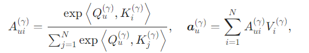
其中值和键是文本编码器提供的令牌嵌入的线性变换，是的线性变换，是交叉注意力层的输出。
4.2 布局指导
像 SD 这样的文本到图像生成器很难准确解释文本提供的布局指令。因此，我们引入了一种方法，通过从具有附加控制的分布$ p(x |y, B, i) y_iB$，这可以通过操纵架构中某些交叉注意力层中的注意力响应来实现。
已经表明，交叉注意力层调节生成图像的空间布局[19]。具体来说， 决定了层中每个位置与个文本标记中的每一个相关联的强度。由于每个空间位置的关联强度的总和，因此不同的标记可以被视为位置“竞争”。为了使用对应于令牌的边界框来控制图像布局，可以偏向注意力，使得目标框内的位置与密切相关（而其他位置则不是）。如下所述，这可以在不微调图像生成器或训练附加层的情况下完成。
接下来，我们对两种策略进行了全面调查，以实现无训练布局控制：前向和后向引导（图 2）。虽然最近在最近的工作 [2, 45] 中已经讨论了前向引导的实例，但我们在此形式化了这种方法，确定了它的局限性，并提出了后向引导作为更有效的替代方案。
4.2.1 前向指导
在前向引导中，边界框B被表示为平滑窗口函数，它等于盒子内的常数，并且很快下降到外部的零。
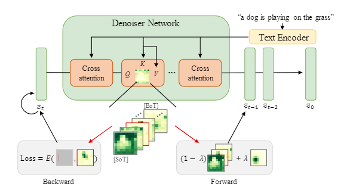
图2：两种布局引导策略概述。所选单词标记的交叉注意力图用红色边框标记。在前向引导中，单词、开始和结束标记的交叉注意力图在空间上是有偏差的。在后向引导中，我们改为计算损失函数并在推理过程中执行反向传播以优化潜在。
我们对窗口函数进行缩放，使。然后，我们通过用以下公式替换交叉注意图来偏置交叉注意图：
其中定义了干预的强度。在实践中，我们对上述公式的右侧进行归一化，沿文本标记维度使用softmax函数，保持逐像素注意的总和等于1。注意上述公式只操纵第个token的交叉注意映射，并且窗口由质量加权，使后者保持不变。
该干预应用于所选层上去噪网络的多次迭代。这意味着每个选定层计算的激活图按照等式独立修改。
一个关键的分析表明，前向引导是一种简单的方法，它受到固有约束的影响，阻碍了其提供有效布局控制的能力。正如我们在第 3.3 节中讨论的那样，这主要是由于在生成过程中影响布局的各种因素，包括文本标记之间的空间依赖性和初始噪声中的空间信息“隐藏”。
4.2.2 反向指导
为了解决前向引导的缺点，我们引入了一种替代机制，我们称之为反向引导。我们不是在反向引导中直接操纵注意力图，而是通过引入能量函数来偏置注意力：
优化该函数鼓励第个标记的交叉注意力图获得指定的区域内的更高值。具体来说，在降噪器的每个应用中，当评估层$ γ ∈ Γ z_{t}\left(\equiv z_{t}^{(0)}\right)$：
其中$ η > 0 \sigma_{t}=\sqrt{\left(1-\alpha_{t}\right) / \alpha_{t}}$。通过更新潜在的，所有标记的交叉注意力图受到后向指导的间接影响。为了生成图像，我们在梯度更新和去噪步骤之间交替。
4.3 分析与讨论
接下来，我们详细介绍了前向和反向策略之间的比较分析。为了激发反向指导和理解其有效性，我们阐明了所有标记的重要性以及初始噪声在生成过程中塑造布局的影响。
4.3.1 Word Tokens
一个重要的考虑因素是，由于自注意力，文本编码器在处理提示时融合了来自不同单词的信息。这导致“语义重叠”：来自一个token的信息由另一个token编码。换句话说，文本嵌入同时捕获特定于单词和上下文信息，例如主谓宾依赖关系。然后通过交叉注意力层将这种重叠从文本编码器转移到扩散过程中，从而产生空间重叠。
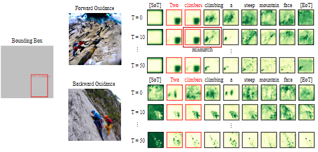
图3：前向和后向引导过程中的交叉注意力图。不同单词之间的空间依赖性对前向引导产生负面影响，而后向引导软鼓励所有依赖标记匹配所需的布局。
图3中的示例说明了不同单词的交叉注意力图中的这种重叠。它还显示了为短语“两个攀爬者”提供空间条件时前向和后向引导的行为。很明显，条件短语的注意力图与其他词（“climbing”、“a”）的空间依赖关系之间的不匹配导致前向指导忽略布局条件。相反，后向引导在必要时间接驱动所有注意力图朝向布局条件，因为它作用于潜在部分。
4.3.2 Special Tokens
另一个关键发现是[SoT]和[EoT]标记的交叉注意力图与输入文本中的内容词不对应，仍然携带显着的语义和布局信息。
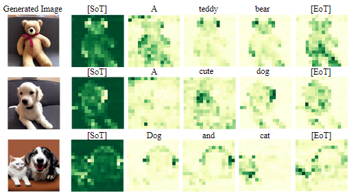
图4：生成过程中不同文本提示的交叉注意力图。表明开始
[SoT]和填充[EoT]标记携带丰富的语义和布局信息。
如图 4 所示，[EoT]标记的交叉注意力图对应于生成图像中的显着区域，即通常是文本提示中单个语义实体的并集。[SoT]的行为与[EoT]互补，强调背景。为了使前向引导有效，因此不仅需要干预选定的内容标记，还需要干预特殊内容标记。我们使用输入框的并集作为[EoT]的指导，对[SoT]则相反。然而，我们凭经验发现，这有时会导致过于激进的指导，这会损害图像保真度。另一方面，后向引导不会受到这些缺点的影响，因为它进行潜在的优化，我们在补充中进一步讨论这一点。
4.3.3 Initial Noise
最后，扩散过程的初始噪声在塑造图像的布局方面起着重要作用。我们凭经验观察到噪声包含内在布局；例如，当使用相同的种子用“狗的图像”和“猫的图像”等短语提示模型时，它会生成布局一致的图像，将狗和猫放在相同的位置。我们在补充中提供了示例，具有接近用户给出的固有布局的初始噪声更容易优化并导致更高的保真度。
因此，选择与所需布局一致的噪声模式可以进一步提高指导的有效性。在后向引导中，应用于交叉注意力图的损失实际上可以加倍作为初始噪声选择的度量。具体来说，我们对不同的噪声模式进行采样并评估方程。
上述公式在对几个步骤应用后向引导后，这使我们能够选择最佳对齐的初始噪声。有关详细结果，请参阅补充材料。
4.3.4 Forward vs Backward
总之，前向和后向引导使用不同的机制来操纵交叉注意力。前向引导直接修改交叉注意力以符合规定的模式，这对于许多去噪迭代重复“强制”。虽然它不会产生任何额外的计算成本，但它很难提供对布局的稳健控制，因为非引导标记可能会导致生成偏离所需模式。相比之下，后向引导使用损失函数来评估注意力是否遵循所需的模式。虽然比前向引导慢，但后向引导更加细化，因为它间接鼓励所有标记（引导和非引导标记）通过潜在更新遵守布局。
4.4 真实图像布局编辑
布局指导可以与建立在基于扩散的图像生成器的其他技术相结合。我们证明这对于真实图像编辑的任务。为此，我们将后向引导合并到两种方法中，这两种方法通常用于给定真实图像的扩散模型的个性化，即文本反转 (TI) [15] 和 Dreambooth[42]。TI通过优化概念的可学习文本标记，将现有的图像生成器扩展为给定一个或几个图像的新概念作为示例。Dreambooth试图通过微调预训练的文本到图像模型来捕获特定主题的外观，其中有几个图像可用。然后，可以生成学习概念的新图像。
这两种方法都不支持对新生成的图像进行局部空间控制；它们的编辑通常是全局和语义的。为此，我们对Dreambooth-finetuned模型和TI-optimized令牌作为提示的一部分应用反向指导。这使我们能够控制生成图像的布局，同时保留由表示的原始对象的身份。
5 Experiments
在本节中，我们评估了我们的无训练布局指导方法，定量比较前向和后向引导的变体，并在三个基准上提供与之前和并发工作的比较。
5.1 实验环境
5.1.1 实现细节
我们利用在LAION-5B数据集[44]上训练的稳定扩散(SD) V-1.5[39]作为默认的预训练图像生成器，如果没有指定。有关架构和噪声调度器的详细描述，请参阅补充。
对于前向指导，我们将上述公式应用于扩散过程的前40步去噪网络的每一层，设。对于后向指导，我们计算中块交叉注意图和去噪网络上采样分支的第一个块(U-Net[41])的损失，因为我们发现这是平衡控制和保真度的最佳设置。我们默认设置，但发现$ 30\sim50 $之间的值在大多数设置中运行良好。由于生成图像的布局通常在推理的早期阶段建立，因此在扩散过程的初始 10 步中执行反向指导，并在每一步重复 5 次。
5.1.2 评估基准
我们在三个基准上定量评估我们的方法：VISOR[16]、COCO 2014[29]和Flickr30K实体[34,54]。我们讨论了 supp 中数据集使用伦理问题。VISOOR提出了量化文本到图像模型空间理解能力的指标。对于COCO 2014，我们遵循先前工作 [4] 采用的相同设置，它每张图像仅使用注释对象的子集。最后，我们引入 Flickr30K实体数据集作为评估布局控制的另一个基准，因为它包含具有视觉基础的图像-标题对，补充材料中提供了所有基准和指标的详细信息。
5.2 前向与后向指导
表 1：前向 (
FG) 和后向 (BG) 策略的比较，包括噪声选择 (NS)。FG∗：前向引导包括[SoT]和[EOT]标记。我们随机抽取了 1000 个文本提示，并基于VISOOR[16] 计算指标。
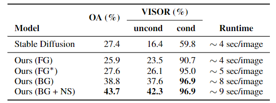
首先，我们使用具有 1000 个随机选择的文本样本的VISOR协议比较表 1 中的两种不同引导模式（前向和后向）。前向引导的最大优点是计算开销可以忽略不计，从而导致更快的推理时间。然而，我们观察到，与 (unguided) SD 相比，前向引导并没有显着提高对象精度 (OA)，而后向机制产生明显更高的 OA。在评估生成的空间关系（VISOR 条件/无条件指标）方面，前向和后向引导都获得了比 SD 基线更好的结果。我们还发现，包含 [SoT] 和 [EoT] 标记改进了前向引导，这证实了我们在第 4.3 节中的分析和见解，但后向引导仍然实现了卓越的性能。最后，使用后向引导进行噪声选择在所有指标上都提供了显着提升。
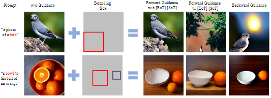
图 5：前向和后向引导之间的比较，包括开始和结束标记的指导。
我们在图 5 中提供了前向和后向机制的定性比较，包括特殊标记对前向引导的影响。后向引导在生成的对象和输入边界框之间实现了更好的对齐，它还有助于解决扩散模型中生成的图像偶尔会省略对象的问题。
5.3 与先前工作的比较
表 2：基于 VISOR [16] 协议的后向引导（我们的）与文本到图像生成模型的比较。
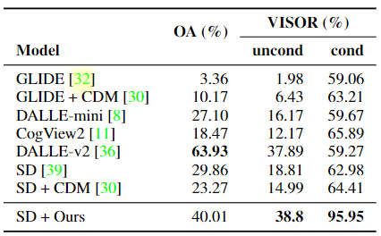
在表 2 中，我们将我们的方法与不使用布局控制的文本到图像生成方法进行比较。我们注意到比较是公平的，因为在此设置 (VISOR) 中，指导不需要手动用户输入（见补充）。我们的方法在 VISORcond指标下表现出卓越的性能，与基线相比 (SD) 实现了 95.95% 的准确度和更高的 OA。尽管 OA没有直接评估布局，但改进可以通过非引导 SD 经常无法在非典型组合中生成正确的语义这一事实来解释。我们还注意到，虽然DALLE-v2[36] 总体上实现了最高的OA，但与 SD 相比，布局指令似乎更难，如VISORcond分数较低所示。
表3：与其他布局到图像模型进行比较。我们的方法提高了空间保真度（由更高的
AP/mAP分数建议）。mAP以0.3的IoU阈值计算

在表 3 中，我们将我们的反向指导与其他布局条件机制进行了比较。除了最后两行的条目外，所有方法都基于Stable Diffusion V1.5[40]。值得注意的是，我们的反向引导大大超过了其他布局条件反射方法，在COCO和Flickr30K上实现了mAP和APP的9点改进。值得注意的是，与并发BoxDiff模型[50]直接比较，我们在MAP和APP中获得了11.6的增益，在保持类似的图像质量的同时，都获得了9.6的增益。最后，我们表明我们的方法可以互补地用于 GLIGEN[27] 等方法，这些方法训练额外的层进行布局调节，进一步提高了它们的性能。
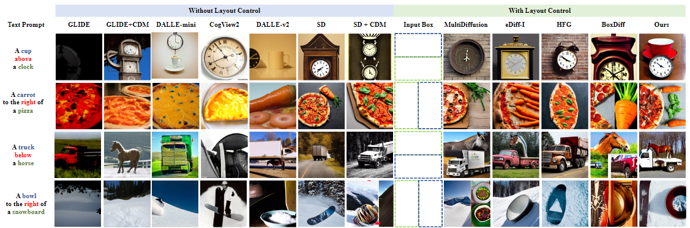
图6：不同文本到图像模型与[16]中定义的文本提示的定性比较。如 [16] 中所述，当前的文本到图像模型无法在没有显式布局调节的情况下理解空间关系。然而，我们在交叉注意图的指导下实现了对生成的图像的控制。
在图 6 中，我们使用从 [16] 采样的提示定性地比较不同的文本到图像模型。不使用布局控制的方法不能纯粹基于文本输入来推断对象之间的空间关系，并且通常无法生成一个或两个对象。我们还观察到，即使是布局条件反射的方法在这种情况下也很困难，尤其是那些采用前向引导范式的方法（eDiff-I [2]、HFG[45]）。在 BoxDiff[50] 的情况下，较低的质量可能是由于忽略了特殊标记和损失函数设计的影响。相比之下，我们的方法（后向引导 SD）可以准确地定位场景中的对象，即使它们很少一起看到，例如“雪板”和“碗”，并且在不损失图像保真度的情况下实现了对提示的最佳依从性。
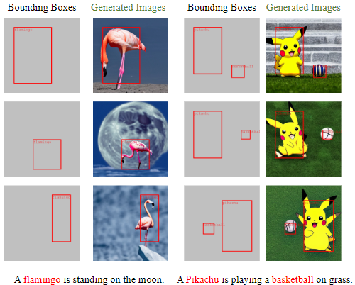
图7：我们的方法使用用户指定的边界框控制生成的图像内的对象。左边，火烈鸟的大小和位置根据边界框而变化。在右边，我们展示了控制多个对象的能力。
我们的方法的更多示例如图 7 所示，展示了对一个或多个对象的大小和位置的精确控制，包括非常规对象类别，例如“火烈鸟”或“皮卡丘”和非典型场景组合。
5.4 进一步的分析和应用
5.4.1 真实图像布局编辑
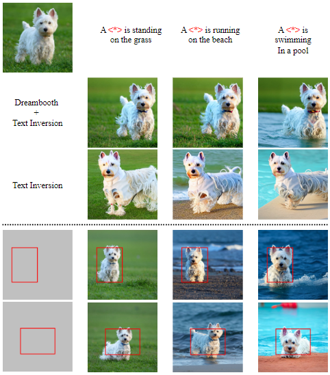
图8：左上角是真实图像输入。虚线上方的图像仅使用文本反转 (TI) [15] 和
Dreambooth[42] 生成。虚线下的图像是由我们的方法在Dreambooth和TI之上生成的。
我们在图 8 中展示了反向布局指导编辑真实图像的潜力，证实了它在改变“狗”的位置、手势和方向（基于边界框的纵横比）以适应新上下文方面的有效性，而不改变其身份。如图所示，仅通过 Dreambooth/TI 无法实现精确控制对象大小和位置的能力，这突出了我们的方法在与图像编辑和操作相关的广泛应用中的潜力。
5.4.2 交叉注意力层和指导步骤
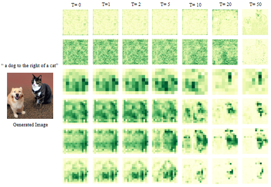
图 9：单词“cat”在不同时间步（从左到右）的不同层（从上到下）的交叉注意力图。
我们还研究了实现布局控制所需的层和引导步骤的数量。去噪网络各层的交叉注意图如图9所示。我们观察到（下采样）的第一层没有捕捉到关于对象的太多信息（这里是“猫”）。我们发现仅在架构的中间和上采样块上执行反向指导最有效。该图还说明了对象轮廓通常在扩散过程的早期步骤中生成，在 T = 20 之前。根据我们的实验，我们发现 10-20 步通常适合指导。补充中给出了额外的定量分析和示例。
5.4.3 损失比例因子
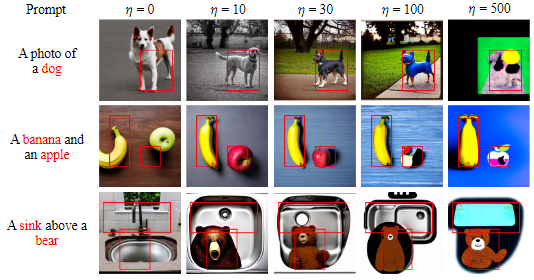
图10：反向制导中不同损耗尺度的定性比较。我们从左到右增加损失尺度，保持相同的提示和随机种子。随着规模的增加，对象更紧密地约束在边界框内。然而，对于非常高的尺度，保真度显着下降。
在图 10 中，我们定性地分析了损失比例因子$ η η = 0$，没有生成熊）。这表明布局引导有助于生成器“识别”文本提示中的多个对象。
6 Conclusions
在本文中，我们研究了在没有额外训练或微调的情况下操纵大型预训练文本到图像模型生成的图像的空间布局的潜力。通过我们的探索，我们发现交叉注意图和扩散的初始噪声在确定布局方面起着主导作用，即使是特殊标记的交叉注意图也包含有价值的语义和空间信息。我们识别和分析了大多数先前工作背后的机制：前向指导。此外，基于我们的分析，我们提出了一种新的技术“后向引导”，克服了前向引导的缺点。最后，我们通过将无训练策略扩展到真实图像布局编辑等应用程序来展示我们的无训练策略的通用性。
我们以与其术语兼容的方式使用 Flick30K实体和 MS-COCO 数据集。其中一些图像可能会意外包含人脸或其他个人信息，但我们不使用这些图像或图像区域。有关伦理、数据保护和版权的更多详细信息，请参阅 https://www.robots.ox.ac.uk/ ̃vedaldi/research/ union/ethics.html 。
7 Appendix
本附录包含以下部分：
- 实施细节：我们提供了实验设置的更多细节，包括网络架构和噪声调度器。
- 评估数据集和指标：我们提供了实验部分使用的数据集和评估指标的详细信息。
- 消融实验：进行了详细的定量评估，以了解各种组件和超参数选择的影响。我们研究了引导步骤、特定层损失和后向引导损失比例因子的影响。
- 初始噪声分析：我们证明了具有相同初始噪声的不同提示生成的图像具有相似的布局。因此，对初始噪声的良好选择对于指导的成功至关重要。此外，我们定量地证明，在交叉注意上使用定义的损失可以实现最佳的初始噪声选择，提高制导性能。
- 不同tokens分析：我们可视化不同提示的交叉注意力图，并为仅使用填充标记控制生成图像布局提供了额外的实验。
- 更多例子：我们提供了我们方法的额外示例，包括VISOR[16]协议和真实图像编辑示例下的示例。
7.1 实现细节
我们提供了我们的实验设置的更多细节。
7.1.1 网络架构
在所有实验中，我们使用稳定扩散 (SD) V-1.5 [39] 作为我们的基础模型，无需任何架构修改。扩散模型在自动编码器的潜在空间中进行训练。具体来说，扩散模型采用相对下采样因子为8的U-Net[41]架构。U-Net的下采样分支有三个顺序交叉注意块。U-Net 的中间部分只有一个交叉注意力块。U-Net 的上采样分支具有三个顺序交叉注意力块。在每个交叉注意力块中，按照以下顺序重复层：ResBlock → Self-Attention → Cross-Attention。下采样分支、中间部分和上采样中的交叉注意力块分别有 2、1 和 3 个这样的重复模式。
7.1.2 噪声调度器
LMSDscheudler在我们所有的实验中都使用 51 个时间步长和 beta 值，从 0.00085 开始并以 0.012 结束，遵循线性调度器。我们还采用无类指导，如 [21] 中所建议的，引导范围为 7.5，与之前的工作 [39] 一致。
7.2 评估数据集和指标
7.2.1 VISOR
我们遵循[16]中描述的评估过程来计算VISOR度量，该度量旨在量化文本到图像模型的空间理解能力。该指标侧重于两个对象之间的二维关系，例如左、右、上、下等。我们测量对象精度 (OA)，即生成的图像包含文本提示中指定的两个对象的概率。VISOORuncond是生成具有正确空间关系的对象的概率，VISORcond是生成正确空间关系的条件概率，因为这两个对象都是正确生成的。为了生成用于评估的文本提示，我们使用来自 MS COCO 数据集 [29] 的 80 个对象类别，考虑到每个空间关系的两个对象类别的任何组合，总共有 80 × 79 × 4 =25,280 个提示。对于每个提示，我们生成单个图像。作为布局引导输入，我们将图像画布分为垂直或水平两个，根据文本提示定义的空间关系类型创建两个相邻的边界框。这仅对布局施加了弱约束，并且可以自动完成（不需要用户干预）。为了与之前在[16]中评估的方法进行公平的比较，我们在计算VISOR度量时使用与[16]相同的检测模型(OWL-ViT[31])。
 微信
微信 支付宝
支付宝